Supercharge the AQW Wiki with |
Hover previews, calculators, dark mode, farm tracking, and more — all in one extension.
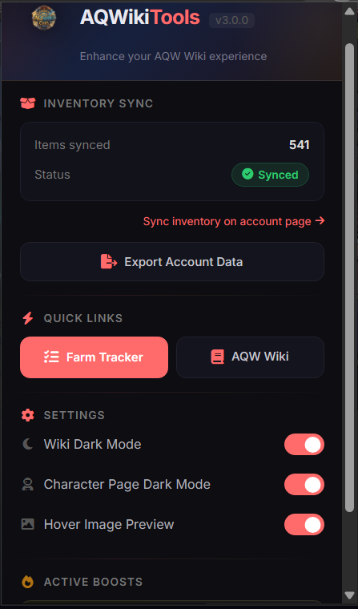
Quick access to inventory sync, settings, dark mode, and the Farm Tracker from one clean popup.
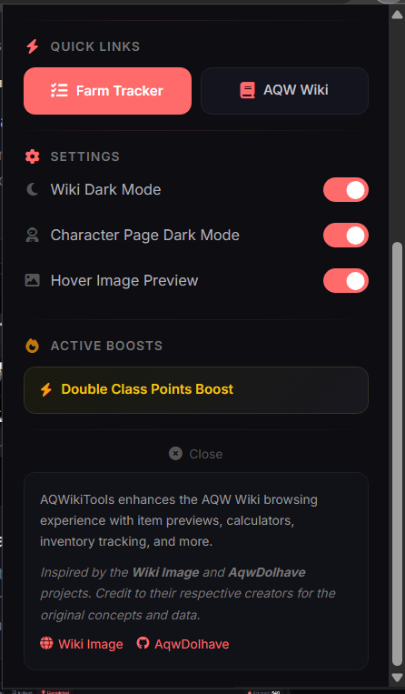
Toggle dark mode, previews, and character page settings. See active server boosts at a glance.
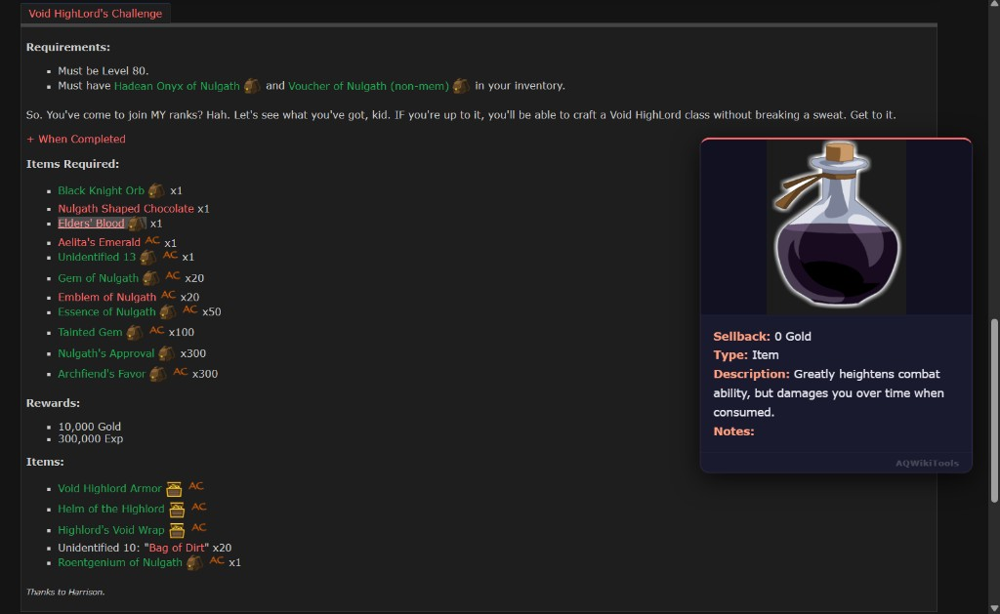
Full wiki dark mode with color-coded owned item badges and bank icons on the page.
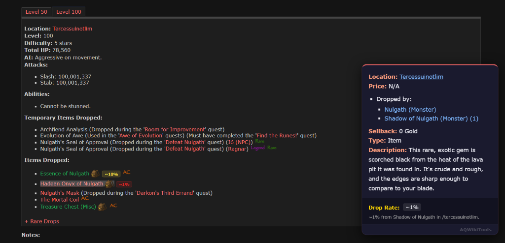
Hover any item to see its image, location, rarity, price, and description instantly.
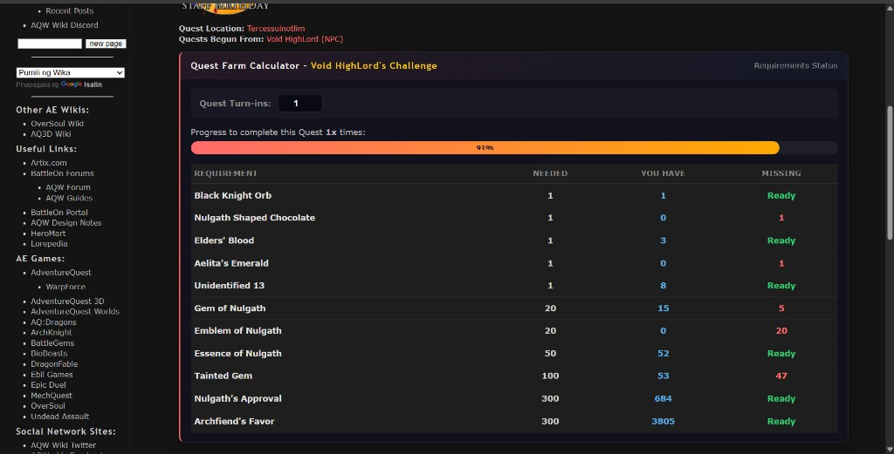
Live progress bar showing needed vs. owned materials and what's still missing.
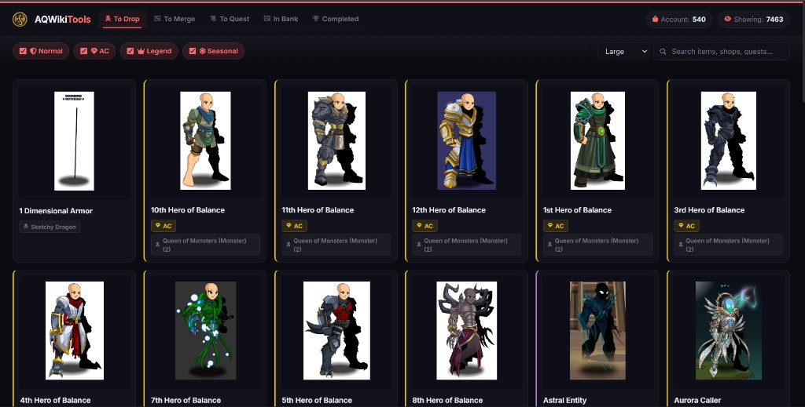
All unowned drop items in a filterable grid with rarity filters and drop source info.
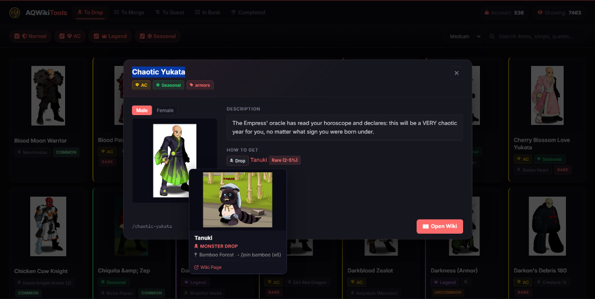
Detailed view with description and drop sources. Hover to preview monster and location.
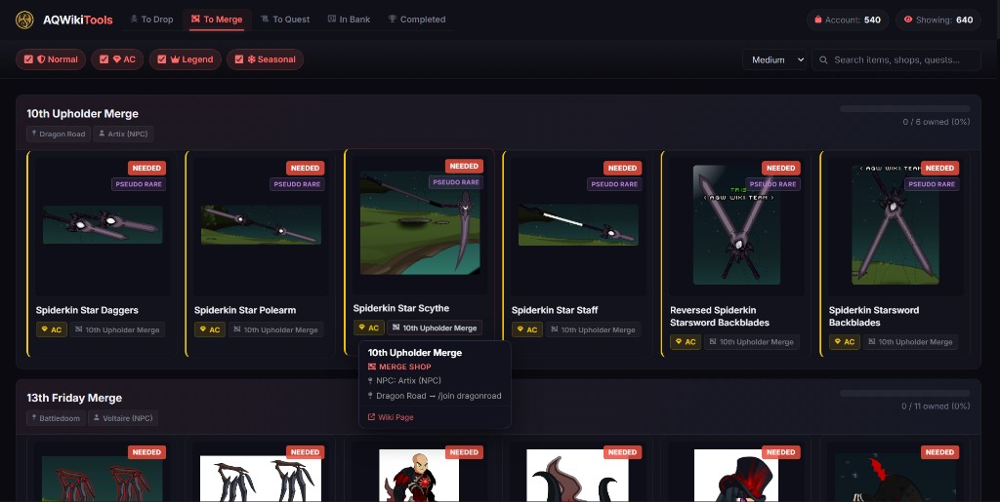
Unowned merge shop items grouped by shop, with NEEDED badges and progress per shop.
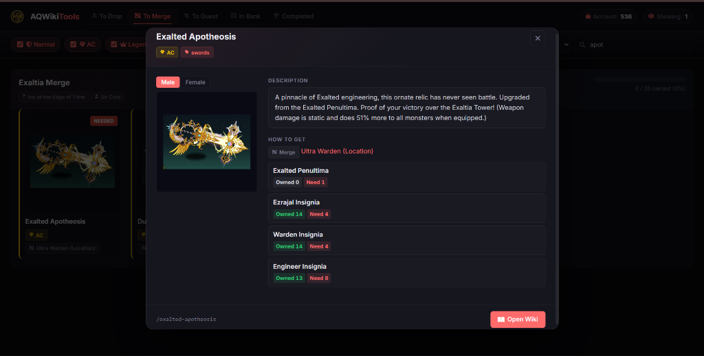
See exactly what materials you need to merge items. Track owned vs needed quantities and locate drop sources.
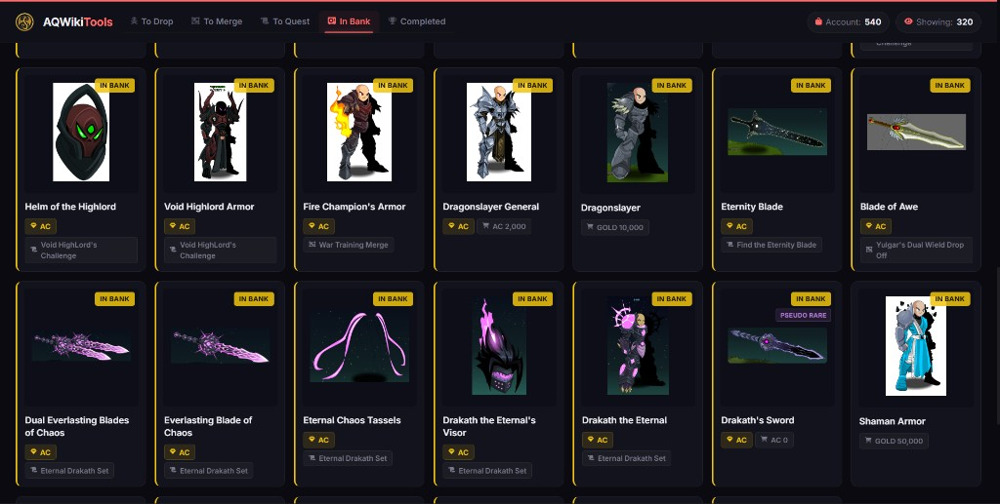
All banked items in a card grid with IN BANK badges, rarity tags, and source info.
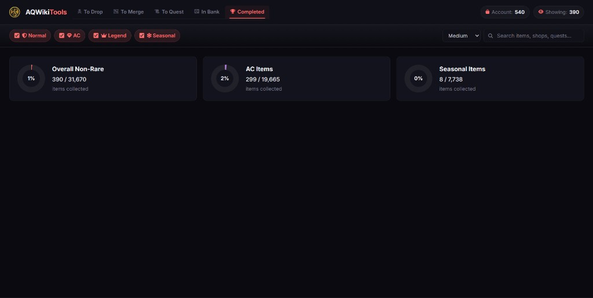
Donut charts for overall completion across Non-Rare, AC, and Seasonal categories.
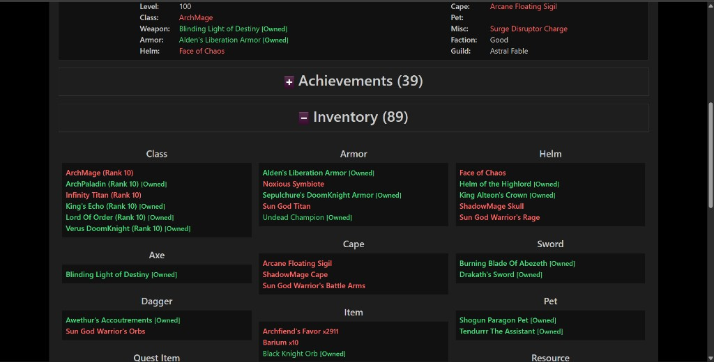
See [Owned] tags next to items you share with other players.
Click through each step — it's easier than you think.
Right-click the .zip → "Extract All..."
AQWikiTools-main folder — that's the one you'll load in the next steps.
Type chrome://extensions in your address bar.
Flip the toggle in the top-right corner.
Click "Load unpacked" → select the AQWikiTools-main folder.
manifest.json inside it — not the outer wrapper folder.
Visit account.aq.com while logged in. The extension syncs automatically.
Visit aqwwiki.wikidot.com and enjoy! Open the popup for settings & Farm Tracker.
No hidden code, no data collection, no shady stuff. Verify it yourself.
Every line of code is public on GitHub under the MIT License.
Everything stays in your browser's local storage. No servers, no analytics, no tracking.
Only storage and artix.com access for server boosts. That's it.
Scan the ZIP on VirusTotal — 70+ antivirus engines, free by Google.